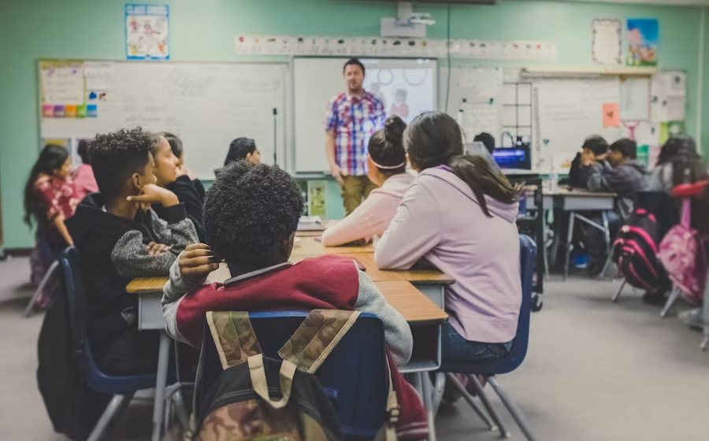
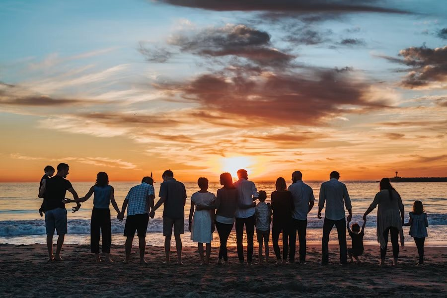
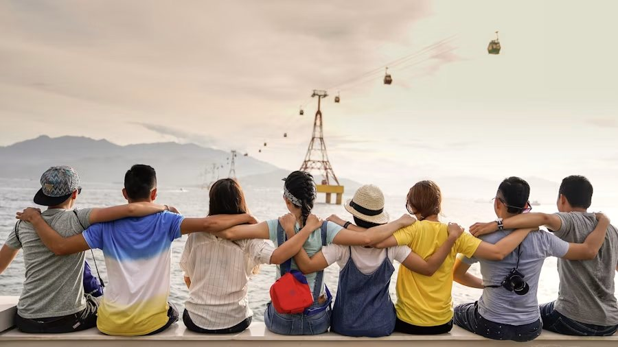

Em andamentoAprender para florescer
Quintal do Saber
Reforço escolar, leitura e oficinas criativas em um espaço seguro onde a curiosidade é sempre bem-vinda.
Nossos projetos nascem da escuta e crescem com a força de cada comunidade. Conheça as frentes que fazem o futuro florescer.
Atuamos de forma integrada para que cada pessoa tenha acesso às ferramentas necessárias para construir seus próprios caminhos.

Reforço escolar, leitura e oficinas criativas em um espaço seguro onde a curiosidade é sempre bem-vinda.

Acolhimento, rodas de conversa e orientação para famílias fortalecerem seus vínculos e redes de apoio.

Mentoria, formação e conexão com oportunidades de trabalho para jovens descobrirem seu potencial.
Há muitas formas de apoiar as crianças, jovens e famílias atendidas pela Raízes do Amanhã.
Você já pode se cadastrar para participar das próximas atividades do Quintal do Saber.
Preencha o cadastro para conversar com nossa equipe e encontrar a melhor forma de colaborar.
Doe seu tempo e suas habilidades para apoiar as atividades e fortalecer as comunidades atendidas.
Colabore com leitura, reforço escolar e oficinas para crianças e jovens.
Tenho interesseAjude na organização de encontros, acolhimento e atividades comunitárias.
Quero participarCompartilhe suas habilidades em comunicação, criação e apoio a eventos.
Conheça o cadastroAs contribuições ajudam a manter as atividades educativas, apoiar famílias e realizar ações nas comunidades.
Apoie os custos dos projetos e materiais utilizados nas atividades.
Doe livros, cadernos e materiais escolares em bom estado para as ações educativas.
Participe das campanhas de arrecadação e ajude a divulgar as necessidades das comunidades.
Nenhuma mudança acontece sozinha. Construímos cada ação junto de moradores, escolas, profissionais e parceiros locais — porque quem vive o desafio também conhece a potência da solução.